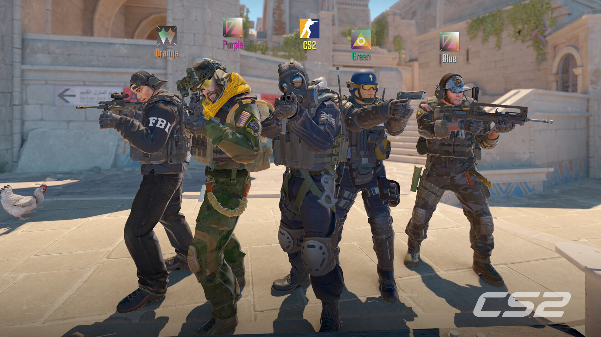

MAJOR
PGL Singapore Major
Singapúr
25. nóv. – 13. des. 2026
Stærsta sviðið, bestu liðin og Major-stemning. Mótið er í Singapúr í lok árs.
14.900 kr. sýniverð
Opinberar upplýsingar um mótið ↗Fyrir okkur sem fylgjumst með CS
Miðar á LAN, goðsagnirnar og spilararnir sem við getum ekki hætt að horfa á. Allt á einum stað, á íslensku.
Smíðað af CS-áhuga. Lokaverkefni í vefþróun.

Hvert förum við næst?

Singapúr
25. nóv. – 13. des. 2026
Stærsta sviðið, bestu liðin og Major-stemning. Mótið er í Singapúr í lok árs.
14.900 kr. sýniverð
Opinberar upplýsingar um mótið ↗
Singapúr
15. – 28. mars 2027
16 lið mæta á fyrsta BLAST Open ársins 2027. Fínt tilefni til að fylgjast með góðu CS.
9.900 kr. sýniverð
Opinberar upplýsingar um mótið ↗
Reykjavík · uppbúið sýnimót
7. nóvember 2026 · sýnidæmi
Komdu með vinunum, taktu nokkra leiki og horfðu á úrslit. Einfalt LAN-kvöld búið til fyrir verkefnið.
4.900 kr. sýniverð
Ekki raunverulegur viðburður.
Vitality vann MOUZ 3–0 í úrslitum ESL Pro League Season 24. ZywOo fékk MVP-verðlaunin. Liðið er apEX, ZywOo, ropz, flameZ og mezii.
Bak við nöfnin
Við skoðum tölur um spilarana og berum saman hlutverk. AWP, riffill, anchor eða IGL — það er ekki allt sami leikurinn.
Og svo eru það goðsagnirnar. Þeir sem létu okkur byrja að horfa á CS.
Smá CS-stemning
Opinber CS2-kynning frá Valve. Uppruni ↗
Hér er einfaldur hjálparkassi, eins og í CSS-glósunum.
Farðu í „Mót og miðar“ og veldu „Velja miða“. Þetta er æfing án greiðslu.